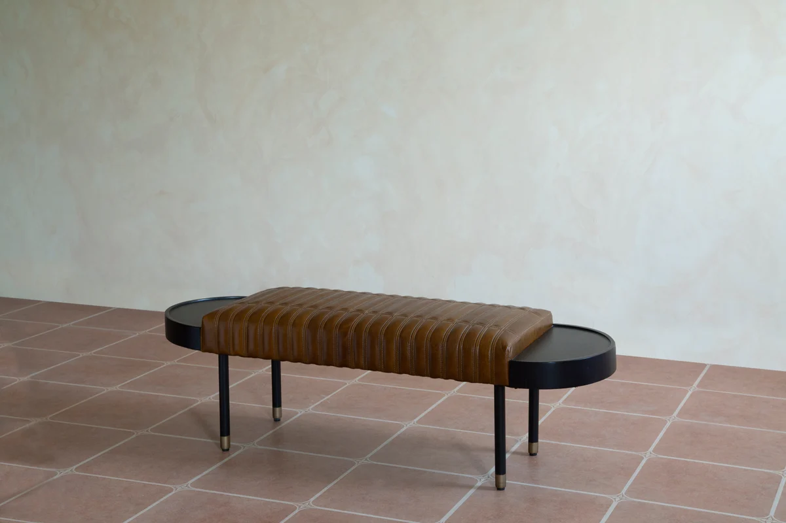
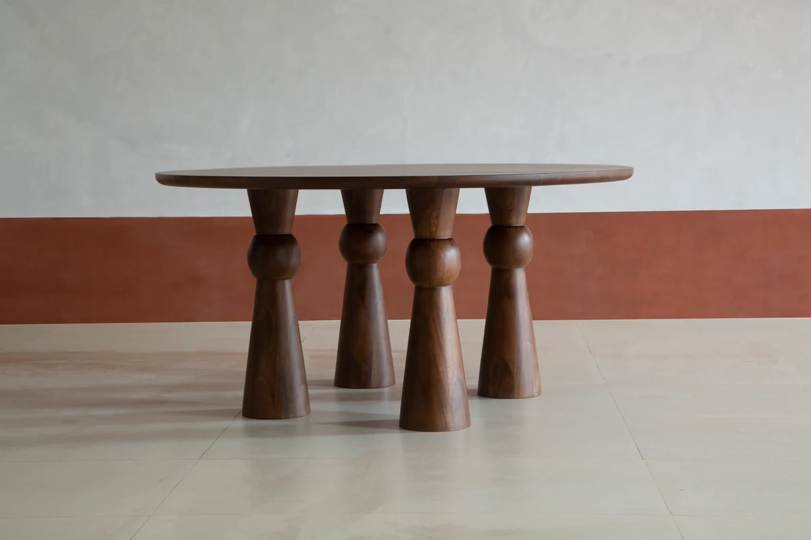
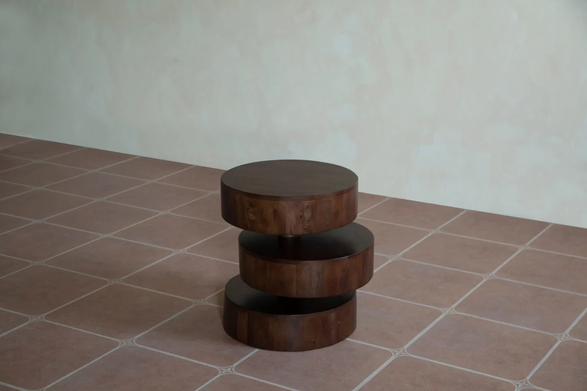

7 Coffee Table Styling Ideas to Elevate Your Living Room
Your coffee table is more than a functional piece. It's a canvas for expressing your personal style.
Read the storyJournal
Ideas, inspiration and stories to help you create a home that feels truly yours, from styling tips to behind-the-scenes looks at our craft.
Your coffee table is more than a functional piece. It's a canvas for expressing your personal style.
Read the story





